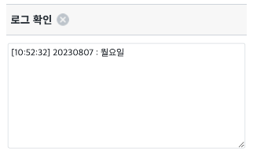

WebSquare의 API를 활용해 yyyyMMdd 형태의 날짜를 입력받아 해당 요일을 반환하는 예제입니다.
yyyyMMdd 형식의 날짜를 입력해 요일 반환받기
STEP 1. yyyyMMdd 형식에 맞는 날짜를 입력합니다.
y: Year
M: Month
d: Day
그림 1.브라우저(Chrome) 실행 예시
STEP 2. 버튼을 클릭하면 로그 확인 영역에 결과가 출력됩니다.
그림 2.브라우저(Chrome) 실행 예시

[소스 코드 예시]
// 예제 파일에서는 스크립트 scwin.btn_getDay_onclick에 작성되어 있습니다. var _result = ""; // "yyyyMMdd" 형식의 날짜 문자열로 입력받아 요일 문자열을 반환합니다. _result = WebSquare.date.getDay("20230809")
WebSquare.date.getDay